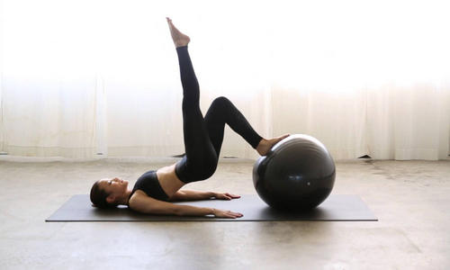

10 Benefícios do Pilates que você precisa saber!
O pilates pode ser praticado por todos os públicos, adolescentes, idosos, praticantes de atividade física, atletas, pessoas com patologias (desde que liberadas pelo médico, claro) e para reabilitação. Praticar os exercícios corretamente, seguindo as orientações de um profissional, traz inúmeros benefícios à saúde física e mental. A Instrutora de Pilates Nathalia Cristine comenta sobre 10 benefícios que a atividade oferece. Confira e pratique:
Proxima Pagina
Em todos os exercícios a postura é muito importante. Ela trabalha e corrige os desalinhamentos posturais que vão melhorando a cada dia.
Através das resistências (molas e acessórios) ou movimentação, aos poucos, torna-se notável o aumento da amplitude de movimento.
Proxima Pagina
Durante a atividade, exercícios de alongamento promovem o aumento da flexibilidade muscular.
Com a prática do Pilates, a percepção corporal aumenta. Isto porque durante as execuções é necessário pensar no movimento que será realizado para que ele seja executado com precisão.
Proxima Pagina
A respiração é um dos princípios do Pilates. Sendo corretamente executada ela ajudará na coordenação de todos os movimentos.
Força muscular é muito trabalhada nas aulas de Pilates. Para controlar esses movimentos, são trabalhados músculos estabilizadores que ajudarão na resistência muscular.
Proxima Pagina
Para uma boa execução e fluidez de movimento, a coordenação é trabalhada o tempo todo.
O corpo parado, sem atividade física gera rigidez muscular que acarreta em dores no corpo. No Pilates o corpo é trabalhado através das movimentações, o que promove uma soltura muscular deixando a rigidez muito menor e aliviando assim as dores.
Proxima Pagina
Durante as aulas de Pilates os exercícios trabalham o fortalecimento da musculatura do assoalho pélvico. Perceber e conhecer essa região no corpo melhora incontinência urinária e ajuda no trabalho de parto, principalmente em parto normal.
Exercícios ritmados, músicas menos agitadas e um ambiente mais calmo, ajudam no relaxamento muscular e mental, deixando o praticante mais relaxado e tranquilo.
FIM!